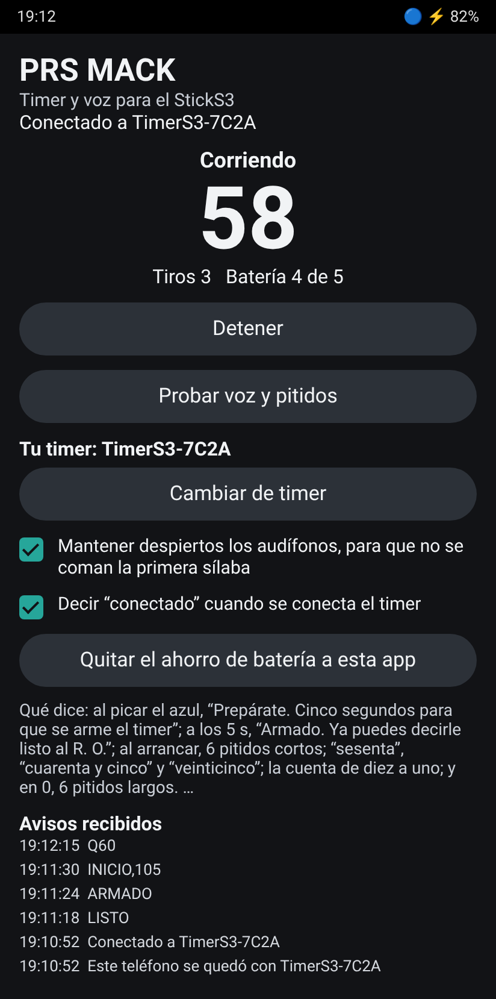
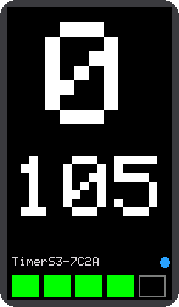
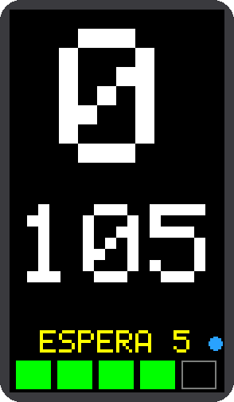
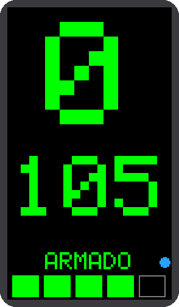
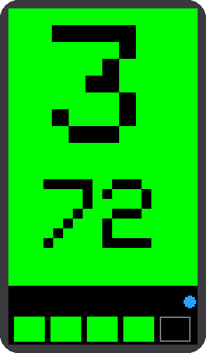
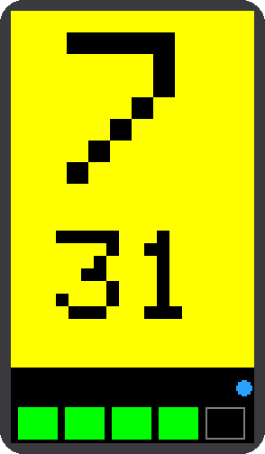
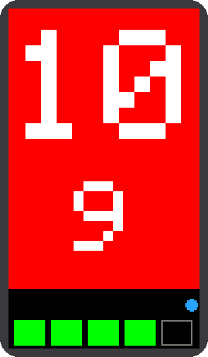
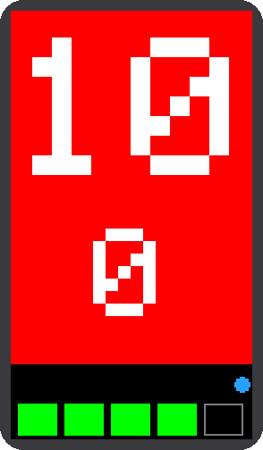

PRS Timer Voz
Timer y contador de tiros que te dice el tiempo en tus audífonos. Para PRS22 y NRL22.
Todavía está por perfeccionarse. El timer con voz creemos que ya se puede usar sin problemas: lo probamos con la pantalla del teléfono apagada y, cuando el StickS3 se apagó solo y lo volvimos a prender, se reconectó sin tocar nada. Al 26 de noviembre de 2026, el contador de tiros sigue en prueba: lo vamos a probar con disparos reales el resto del año y a principios de 2027, para encontrar el ajuste de los sensores (el sonido del disparo y el retroceso del rifle) con el que funcione bien. El reto más difícil es el calibre .22; creemos que con alto poder será más sencillo.
Para este timer y contador usamos el M5StickS3 de M5Stack, una microcomputadora programable de 48 × 24 × 15 mm y 20 g con pantalla a color, micrófono, bocina, acelerómetro, batería y Bluetooth. M5Stack la diseñó para control remoto y proyectos de internet de las cosas (IoT), no para tiro; aun así, trae justo lo que necesitamos: oír el disparo, sentir el retroceso, mostrar el tiempo y avisarte en tus audífonos a través del teléfono.
Va montado en el riel del rifle y trabaja con una app de Android: el StickS3 lleva el tiempo de la etapa y cuenta tus tiros, y la app te dice cuánto te queda. El programa y la app son gratis y para compartir.
Por qué lo hicimos así
- Un solo aparato, sin soldar: solo le cargas el programa desde la computadora.
- La voz llega a tus audífonos de tiro: el StickS3 manda avisos cortos por Bluetooth y el teléfono los convierte en voz. No cargas otra bocina.
- App de Android: sigue conectada aunque apagues la pantalla del teléfono. Para iPhone se necesitaría la cuenta de desarrollador de Apple, que cuesta 99 USD al año.
- Un teléfono dedicado: te sirve uno viejito y sin línea, con Android 8 o más (mejor 10 o más). Así no te entra una llamada en plena etapa y el timer no comparte teléfono con tu Kestrel ni con otros aparatos.
- A tu gusto: los segundos de cada aviso, las frases y los pitidos se pueden cambiar; el código es público.
La carcasa para el riel la estamos haciendo junto con otro compañero del PRS. Les avisaremos cuando esté lista.
Dónde comprarlo: Amazon México (llega rápido) · Mercado Libre · AliExpress (búscalo como “M5StickS3”; suele salir más barato, pero tarda más). Revisa que sea el M5StickS3 (modelo K150). Las fotos oficiales están en la página de M5Stack.

Qué hace
- Cuenta tus tiros (en prueba): uno cuenta solo si el micrófono oye el disparo y el aparato siente el golpe de tu rifle al mismo tiempo. El tiro del vecino no mueve tu rifle.
- Lleva el tiempo de la etapa (105 o 120 s) con color en toda la pantalla: verde, amarillo y rojo.
- Arranca solo cuando bajas el rifle para acomodarlo en la estación.
- Te habla en los audífonos por Bluetooth: “prepárate”, “armado”, 60, 45, 25 y la cuenta del 10 al 1.
- Se apaga solo 30 segundos después de terminar la etapa, y la app se vuelve a conectar sola cuando lo prendes.
La imagen de la app es una ilustración; en tu teléfono se ve parecida.
Qué necesitas
| Qué | Detalle |
|---|---|
| M5StickS3 (modelo K150) | De M5Stack. Revisa que diga StickS3 y K150: otros modelos parecidos (como el StickC Plus2) no sirven con este programa. |
| Cable USB-C de datos | Para cargar el programa desde la computadora. Algunos cables solo cargan: si la computadora no ve el aparato, prueba otro. |
| Computadora con Chrome o Edge | Windows o Mac. Solo se usa una vez, para cargar el programa. |
| Teléfono Android | Android 8 o más (mejor 10 o más). Puede ser uno viejo y sin línea. En iPhone no funciona. |
| Audífonos u orejeras Bluetooth | Los que ya usas para tirar, conectados a tu teléfono. |
| Montaje en el riel | Una carcasa que sujete el aparato firme al riel (sin gomas, para que sienta el golpe). La estamos haciendo con otro compañero del PRS; les avisaremos cuando esté lista. |
Dónde comprarlo
- Amazon México: es la publicación de la que salió el primero que probamos (B0GWHN8HK3). Llega rápido; revisa precio y existencia antes de comprar.
- Mercado Libre: publicación del M5StickS3 de M5Stack. Revisa precio, vendedor y que sea el K150.
- AliExpress: búscalo como “M5StickS3” y revisa que sea el K150. Suele salir más barato, pero tarda más en llegar.
- Fotos y ficha oficial: página de M5Stack.
Paso 1: Cargar el programa al StickS3
Se hace una sola vez, desde la computadora y sin instalar nada: esta misma página lo carga.
- Conecta el StickS3 a la computadora con el cable USB-C.
- Si es nuevo (trae el programa de fábrica), ponlo en modo de carga: mantén apretado el botón de encendido hasta que parpadee la luz verde y suéltalo. La pantalla se queda negra.
- Abre esta página (vicentemack.github.io/timer-voz/instalar) en Chrome o Edge en la computadora (no en el teléfono).
- Pica el botón Instalar PRS Timer Voz en el StickS3 (aquí abajo). Chrome te pide escoger el aparato: escoge el puerto que aparece (por ejemplo “USB JTAG/serial debug unit” o un “COM”) y pica Conectar.
- Sigue los botones (vienen en inglés): Install PRS Timer Voz → Next → Install.
- En la pantalla Erase device hay una casilla para borrar el aparato: en uno nuevo, márcala; si ya traía este timer y solo lo actualizas, déjala sin marcar para que conserve tus ajustes y tu registro de tiros.
- Espera a que diga Installation complete! (un par de minutos) y pica Next.
- Si la pantalla del StickS3 se queda negra, dale doble clic al botón de encendido para apagarlo y un clic para prenderlo. Debe mostrar 0 arriba y 105 abajo, en blanco.
- Abajo, en gris, sale el nombre de tu timer (por ejemplo
TimerS3-7C2A). Cada aparato tiene el suyo.
Paso 2: Instalar la app en el teléfono Android
- En el teléfono, abre el botón de arriba en Chrome y deja que se descargue el archivo
PRS_Timer_Voz_App.apk. - Toca Abrir. Si pide permiso para instalar apps de Chrome: Ajustes → activa Permitir de esta fuente → regresa.
- Toca Instalar. Si Play Protect avisa que no conoce la app (porque no viene de la Play Store), puedes dejar que la analice o tocar Más detalles → Instalar de todas formas.
- Abre PRS Timer Voz y toca Conectar con el timer. Permite Dispositivos cercanos y las notificaciones.
- Toca Quitar el ahorro de batería a esta app y quítaselo, para que el teléfono no la cierre.
- La primera vez, prende solo tu timer. La app se conecta, dice “conectado” y se queda con él: en Tu timer sale el mismo nombre que ves abajo en la pantalla del StickS3. En el StickS3 aparece un punto azul.
Si un día quieres usar otro timer, toca Cambiar de timer con solo ese timer prendido.
Cómo se usa en la estación
- Prende el StickS3 (un clic al botón de encendido) como parte de tu entrada a la estación. La app se conecta sola y dice “conectado”.
- Pica el botón azul: suenan 3 bips y oyes “Prepárate. Cinco segundos para que se arme el timer”. Acomódate y quédate quieto.
- A los 5 s: 3 bips, números verdes y “Armado. Ya puedes decirle listo al R. O.”
- Cuando el RO da la señal, baja el rifle para acomodarlo: ese movimiento arranca el tiempo y oyes 6 pitidos cortos.
- Te avisa “sesenta”, “cuarenta y cinco”, “veinticinco” y la cuenta “diez, nueve… uno”.
- En 0: 6 pitidos largos. Ves tus tiros en la pantalla y 30 s después el StickS3 se apaga solo (con el cable USB conectado no se apaga).
- Para la siguiente etapa, lo vuelves a prender y la app se conecta sola.
| Momento | Qué oyes en los audífonos |
|---|---|
| Al conectarse | “conectado” |
| Al picar el azul | “Prepárate. Cinco segundos para que se arme el timer” |
| A los 5 s | “Armado. Ya puedes decirle listo al R. O.” |
| Al arrancar el tiempo | 6 pitidos cortos |
| Quedan 60, 45 y 25 s | “sesenta”, “cuarenta y cinco”, “veinticinco” |
| Últimos 10 s | “diez, nueve, ocho… uno” |
| En 0 | 6 pitidos largos |
Botones del StickS3
| Botón | Qué hace |
|---|---|
| Azul (al frente) | Un clic: arma el timer (o lo arranca a mano si ya está armado). Apretado 1.5 s: lo regresa al inicio. En 0, un clic regresa al inicio. |
| Lateral | Un clic: pasa a la pantalla de prueba (para calibrar) y de regreso. En la pantalla de prueba, el azul apretado 1.5 s cambia la etapa entre 105 y 120 s; se queda guardado. |
| Encendido | Un clic: lo prende (o lo reinicia si está prendido). Doble clic: lo apaga. |
Pantallas del StickS3
Arriba van tus tiros y abajo los segundos que quedan. El color cubre toda la pantalla. Del tiro 11 en adelante el número parpadea, porque ya no valen.







Los dibujos son aproximados; el nombre TimerS3-7C2A es un ejemplo. Desde el minuto, en amarillo y rojo, los colores se invierten cada medio segundo.
La app
- Arriba: si está conectada, en qué va el timer, los segundos, tus tiros y la batería del StickS3.
- Conectar / Detener: prende o apaga la app. Prendida, busca tu timer sola todo el tiempo.
- Probar voz y pitidos: dice todos los avisos para que revises tus audífonos.
- Tu timer / Cambiar de timer: el timer con el que se quedó la app.
- Mantener despiertos los audífonos: déjalo activado para que no se coman la primera sílaba.
- Avisos recibidos: lo último que mandó el timer, con la hora.
Preguntas y avisos
- ¿Lo puedo usar en un match? El tiempo oficial es el del RO. El StickS3 es solo una referencia para ti, y arranca cuando bajas el rifle, un poco después de la señal del RO. Pregunta al director de match antes de usarlo.
- ¿Se pelea con mi Kestrel o mi app de balística? No se ha probado todo junto en el mismo teléfono. Haz una etapa de prueba con todo conectado; si hay cortes, usa un teléfono para el timer y otro para la balística.
- ¿Y si somos varios en la escuadra? Cada timer tiene su nombre y cada app se queda con el suyo. La primera conexión hazla con solo tu timer prendido.
- ¿Cuánto dura la batería del StickS3? Con la pantalla prendida todo el tiempo duró 1 h 45 min (sin Bluetooth). Como se apaga solo después de cada etapa, en un match se usa mucho menos.
- ¿iPhone? No: la app es solo para Android.
- ¿Puedo cambiar las frases o los segundos? Sí. El código es público (abajo). Con Claude u otra IA le puedes pedir, con tus palabras, que avise a los 65 s o que diga otra frase.
Archivos y código
| Archivo | Qué es |
|---|---|
PRS_Timer_Voz_v3_32.bin | El programa ya compilado, en un solo archivo (va en la dirección 0x0). Es el mismo que carga el botón del Paso 1 |
PRS_Timer_Voz_v3_32.ino | El mismo programa, en código (C++ de Arduino), para quien lo quiera cambiar |
PRS_Timer_Voz_App_v1_2.apk | La app de Android, versión 1.2 |
PRS_Timer_Voz_Instructivo_v8.pdf | Este instructivo en PDF |
- Carpeta en Google Drive (solo para descargar)
- Código en GitHub (programa, app y páginas)
- Dónde comprar el StickS3: Amazon México · Mercado Libre · AliExpress (búscalo como “M5StickS3”)
PRS Timer Voz · versión beta · 26 de noviembre de 2026